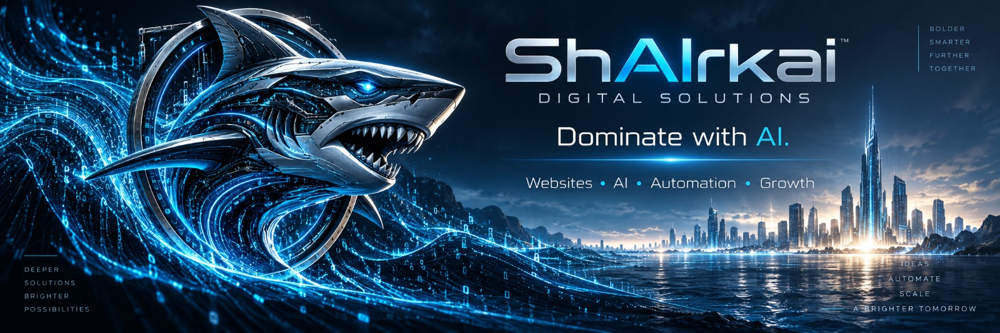

Website Design,
Redesign & Development
Premium marketing sites, full redesigns, landing pages, frontend experiences, and the integrations that make them work.
↗Digital solutions for ambitious businesses
Premium websites, sharp brand systems, AI media, SEO, and intelligent workflows for businesses ready to evolve.
Capabilities
ShAIrk brings the customer-facing experience and the systems behind it into one clear direction.
Talk through your project ↗Premium marketing sites, full redesigns, landing pages, frontend experiences, and the integrations that make them work.
↗Logo direction, visual identity, design systems, and digital assets that make a business recognizable.
↗Search-ready structure, service pages, metadata, local SEO direction, internal linking, and technical basics.
↗Focused campaign pages, inquiry flows, quote requests, and scheduling paths made to reduce friction.
↗Campaign visuals, short-form video, branded imagery, promotional concepts, and product storytelling.
↗Practical customer journeys, automation concepts, follow-up flows, CRM connections, and notifications.
↗
01 / Digital presence
A website should do more than look polished. It should explain the offer, create confidence, support search visibility, and give the right person a clear next step.
02 / Brand expression
Build a presence that feels consistent wherever a customer meets it: website, campaign, social post, product launch, digital ad, or video.
03 / Intelligent operations
Landing page or redesigned website
Clear service paths and inquiry forms
Quote request or scheduling flow
AI-enabled workflows and handoff
Every system starts with the customer journey. We then determine what should be clarified, connected, or automated.
How we work
Understand the business, audience, offer, and current digital gaps.
Set the brand, content, interface, and customer path around the goal.
Create the site, visual assets, and practical digital components.
Launch with a foundation for search, leads, booking, and future growth.
ShAIrk.ai
ShAIrk.ai is led by Icy Vivo and combines creative judgment with modern AI-assisted workflows. The result is focused work that connects design, content, technology, and operations.
Ways to build
Every project is scoped around the business. These packages make the conversation easier to start.
01 / Digital Launch
02 / Digital Upgrade
03 / ShAIrk Growth System
Start a project
Tell us what needs to change, what needs to work better, or what you want to create next.